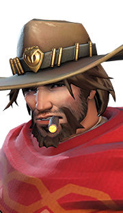

Dans le jeu Overwatch, il y a 32 héros. Tous les héros ont des compétences différentes. Il y a trois types d'héros : Tank, Soigneur et Dégâts.
Pour avoir plus d'informations sur les personnages, vous pouvez cliquer sur l'image du héro.
| Personnages | Nom | Type | Date de mise en jeu | Armes | Capacités |
|---|---|---|---|---|---|
 |
Lúcio | Soigneur | 24 mai 2016 | Ampli | - Crossfade - Volume max. |
|  | Cassidy | Dégâts | 24 mai 2016 | Pacificateur | - Grenade flash - Roulade |
 |
Mei | Dégâts | 24 mai 2016 | Canon Endothermique | - Cryostase - Mur de glace |
 |
Moira | Soigneur | 16 novembre 2017 | Emprise Biotique | - Volatilité - Orbe biotique |
 |
Orisa | Tank | 21 mars 2017 | Canon à Fusion | - Blindage -Halte !- Dispositif de Protection |
 |
Pharah | Dégâts | 24 mai 2016 | Lance-Roquettes Falcon | - Réacteurs - Conflagration |
 |
Reinhardt | Tank | 24 mai 2016 | Marteau à Réaction | - Charge - Barrière - Frappe de feu |
 |
Sigma | Tank | 13 aout 2019 | Hypersphères | - Écran expérimental - Captation cinétique - Concrétion |
 |
Soldat 76 | Dégâts | 24 mai 2016 | Fusil à Impulsions | - Roquettes LX - Sprint- Champ Biotique |
 |
Sombra | Dégâts | 15 novembre 2016 | Pistolet Mitrailleur | - Piratage - Furtivité - Transducteur |
 |
Symmetra | Dégâts | 24 mai 2016 | Projecteur à Photons | - Tourelle à photons - Téléporteur |
 |
Torbjörn | Dégâts | 24 mai 2016 | - Pistolet à Rivets (Principale) - Marteau de forge (Secondaire) |
- Déploiement de tourelle - Surcharge |
 |
Tracer | Dégâts | 24 mai 2016 | Pulseurs | - Rappel - Transferts |
 |
Winston | Tank | 24 mai 2016 | Canon Tesla | - Propulseurs - Générateur d'écran |
 |
Zarya | Tank | 24 mai 2016 | Canon à Paricules | - Écran de particules - Écran généré |
 |
Zenyatta | Soigneur | 24 mai 2016 | Orbes de Destruction | - Orbe d'harmonie - Orbe de discorde |